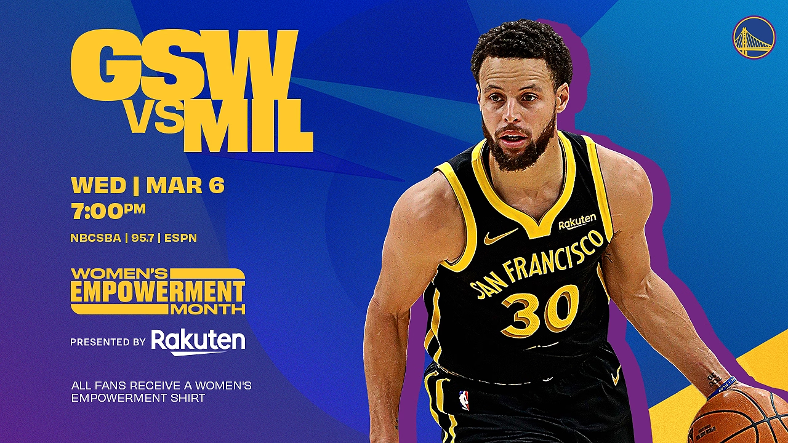
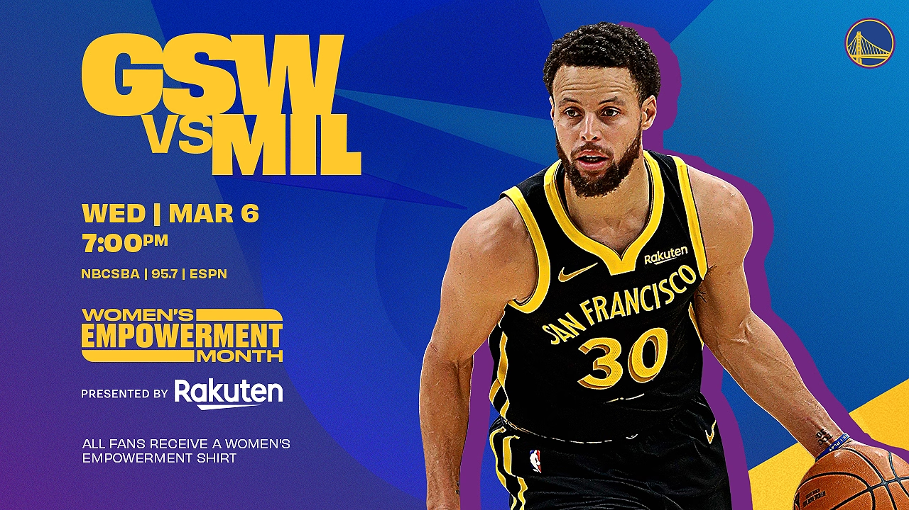
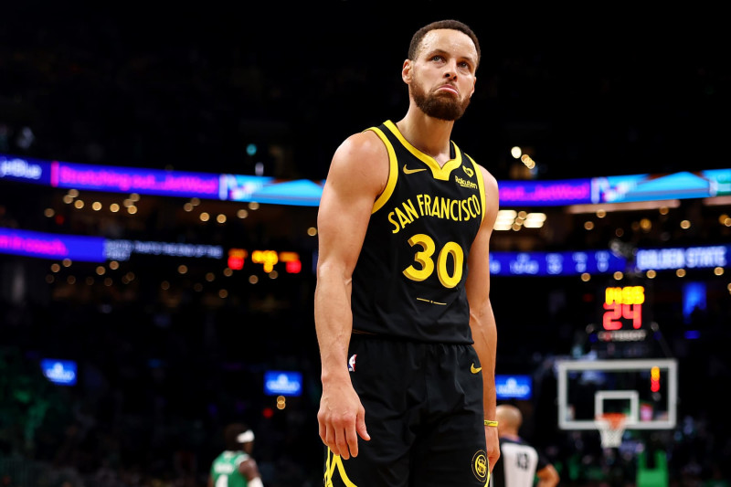
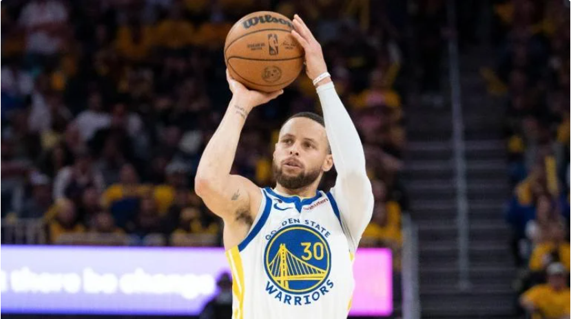
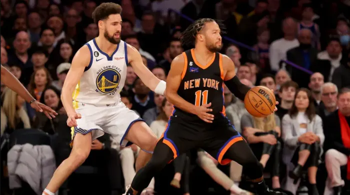
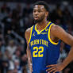
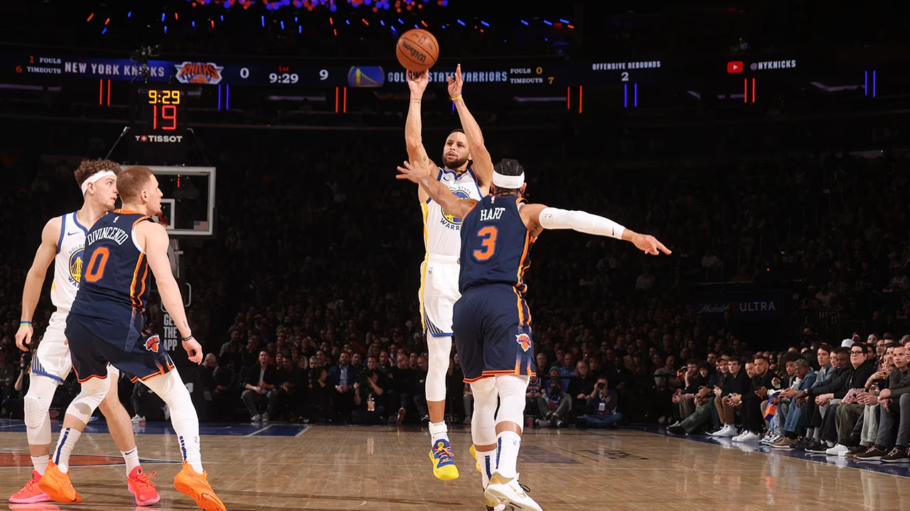
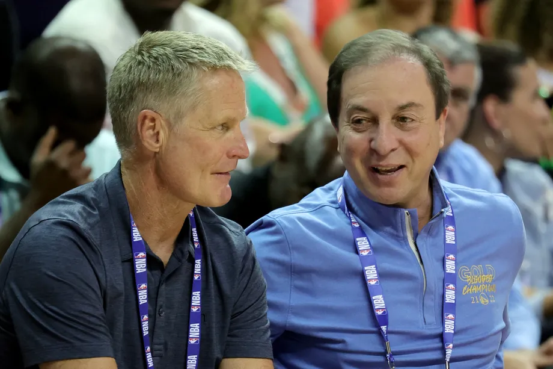
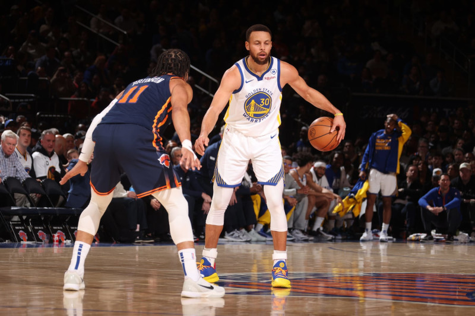

Game Preview: Warriors vs. Milwaukee Bucks - 3/6/24
After a 3-1 road trip, the Warriors return to Chase Center to host Giannis Antetokounmpo, Damian Lillard and the Milwaukee Bucks on...
After a 3-1 road trip, the Warriors return to Chase Center to host Giannis Antetokounmpo, Damian Lillard and the Milwaukee Bucks on...
Stephen Curry and the Golden State Warriors went to Boston Sunday looking for a signature win over the East's top-seeded Celtics..
SportsLine's model just revealed its NBA picks for New York Knicks vs. Golden State Warriors.
Knicks vs. Warriors Preview: How, Who to Watch as Surging Meets Shorthanded
The Warriors' humane handling of Andrew Wiggins' leave of absence to attend to a family matter feels like the appropriate move, writes Monte...
The Golden State Warriors defeated the New York Knicks 110-99 at Madison Square Garden on Thursday night.
Back in January after yet another heartbreaking loss for the Golden State Warriors, Dub Nation HQ ran a poll on whether the Bay Area's...
In a battle between All-Star point guards, Stephen Curry emerged victorious. Curry helped lead the Golden State Warriors to a 110-99 win...
